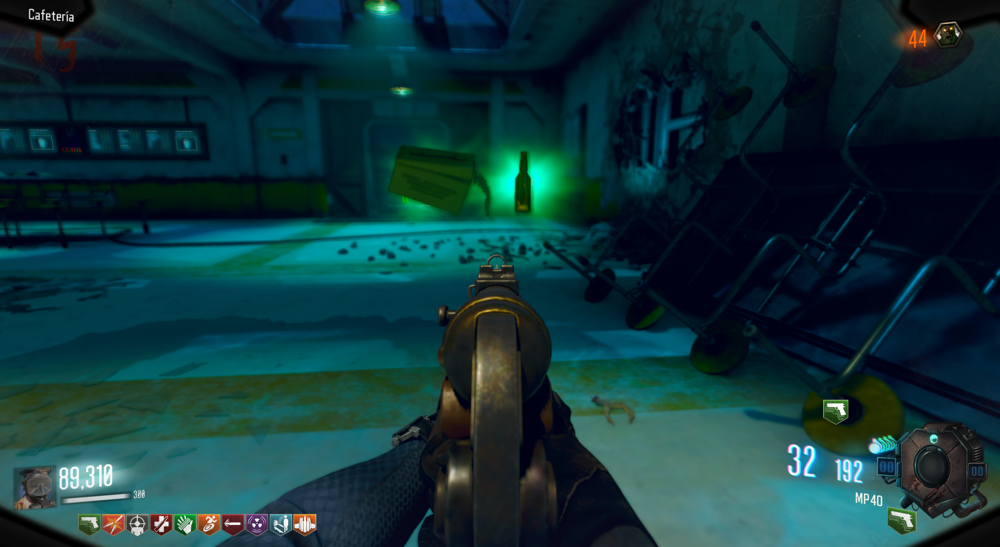

Perk Gratis (Leviathan)

Para conseguir un perk gratis adicional, tendremos que esperar a una ronda de leapers.
Si conseguimos matar a todos CaC(cuerpo a cuerpo), al final de la ronda nos darán un perk.
Recomiendo usar el tridente.